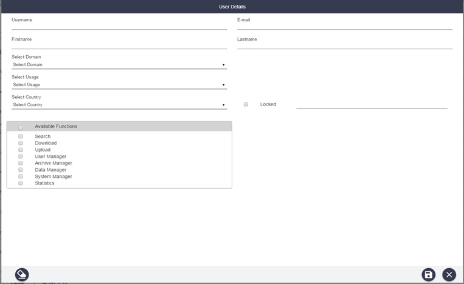

User Management Panel
The administrator management panel allows managing users. This means that the administrator can create, edit and delete any user.

DHuS User Management panel (GUI)
DHuS implements a user management system that prevents uncontrolled accesses and manipulations from unauthorized users. DHuS proposes a user authentication and authorization strategy defined in its internal Database. Users are able to register or sign-in and the administrator are able to configure the user/group permissions from the Web user interface. The user management activities are:
Step 1: to create or delete a user;
Step 2: to authorize the user to access a list of services;
Step 3: to update a user profile;
How to register a new user?
The Administrator shall:
Step 1: Access the DHuS page;
Step 2: Perform the login;
Step 3: Select the Management Panel and then select the Users management panel;
Step 4: Click on the Create button in the lower part of the User management page, which will enable the form here below
User creation form GUI
Step 1: Fill in the new user creation form (note that the fields marked with an asterisk are mandatory) and click on the functions that the user shall be able to use
Step 2: Click on the save button to complete;
Step 3: Then the email notification service will send an e-mail to the user with his profile information (login, first name, last name, available services...) including a generated password.
The administrator has the possibility to modify users authorization settings and information. To modify whatever authorization setting or user information, the Administrator, before executing the following how to procedures, has to:
Step 1: Access the DHuS page
Step 2: Perform the login
Step 3: Select the Management Panel
Step 4: Select the Users Management Panel
Step 5: Select the name of the user in the users list on the left side of the user management panel
How to lock the selected user?
Click on the locked checkbox under the Registration form in the right side of the panel. The administrator shall also indicate the reason of this locking process in the box on the right
Step 1: Click on the save button to complete;
Step 2: Then the email notification service will send an e-mail to the user with his profile information (login, first name, last name, available services...) including locking notification and its relative reason, if it has been indicated.
How to delete the selected user?
Click on the Delete button to delete

Update and delete users GUI
The email notification service will send an e-mail to the deleted user with the communication of the deletion process.